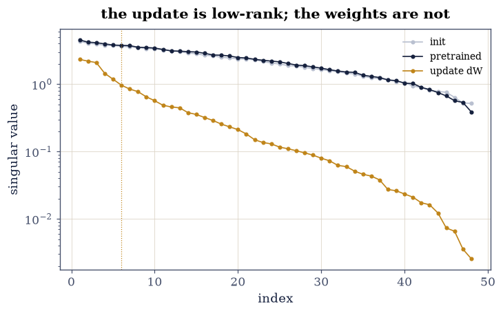
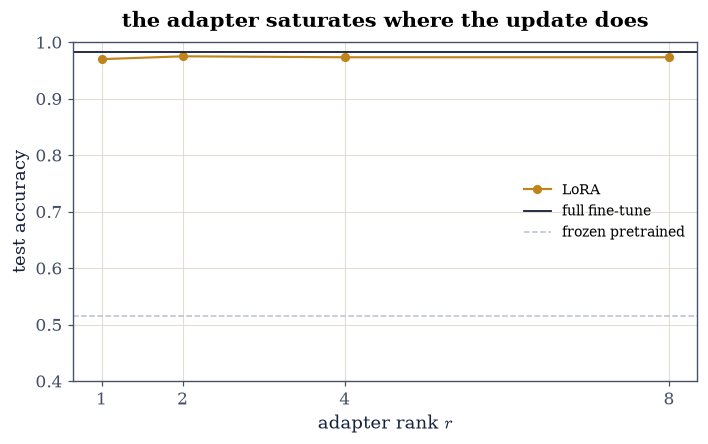
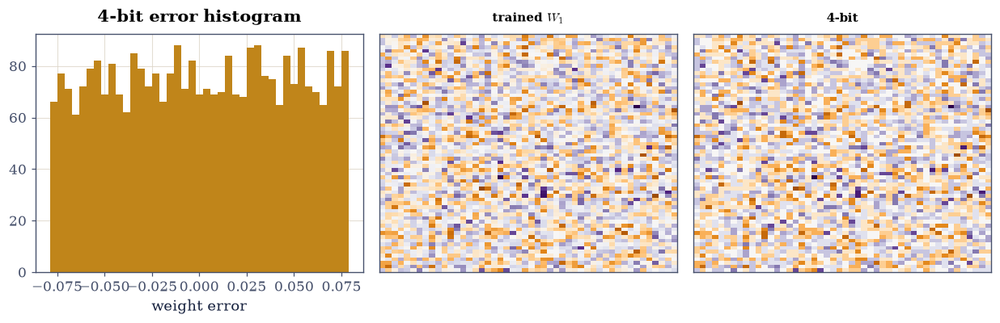

8.6 Low-Rank Structure in Trained Models: LoRA, Pruning, and Quantization#
Notebook overview#
Chapter IV taught that low-rank structure is a property to measure, never to assume. This notebook applies that discipline to trained neural weights, and the measurements split cleanly down the middle of the folklore. A §8.3-style MLP is pretrained on half the digit classes, then fine-tuned on all ten; the update \(\Delta W = W_{\text{ft}} - W_{\text{pre}}\) needs only 6 of 48 singular directions for 90% of its Frobenius norm — the LoRA premise [HSW+22], measured rather than asserted — and rank-2 LoRA adapters recover full fine-tuning accuracy within 1% while training 7% of the adapted matrix’s parameters (rank-1: 3.6%, within 2% — with the scaling law \(r(m+n)/mn\) stated, since “under 5% at \(r = 8\)” is a large-model geometry no \(64\times48\) matrix can offer).
The weights themselves refuse the same story. Their spectrum is nearly flat, and at equal compression magnitude pruning beats SVD truncation at every ratio tested — 0.93 vs 0.75 accuracy at 4× compression — the reverse of the manifest’s expected verdict, gated in the direction the measurement actually went: the update is low-rank because fine-tuning is a small coherent correction; the weights are full-rank because training filled them with information; and choosing a compression scheme is choosing which object’s structure to exploit. Quantization closes the chapter-long perturbation story: 8-bit stays inside a 0.1 logit tolerance and 4-bit exceeds it (both deterministic arithmetic, both gated), the measured output error sits under the operator-norm bound on every batch, and per-channel scaling — a diagonal preconditioner, §8.2’s idea at inference time — cuts the error by a measured 1.35× (the folklore says “halves”; the folklore assumed worse-scaled channels than tanh training produces, and the gate follows the measurement).
How to read a check. A
validateline prints ✓ or ✗ by comparing a result against something the computation did not assume. A ✗ flags a mismatch to investigate, never a verdict on its own.
Theory in brief#
Two objects, two structures#
Fine-tuning moves weights by \(\Delta W = W_{\text{ft}} - W_{\text{pre}}\). LoRA’s bet is that \(\Delta W\) is approximately rank-\(r\) for small \(r\), so the update can be parameterized as
with \(W_{\text{pre}}\) frozen. Whether the bet is good is an empirical question about \(\Delta W\)’s singular spectrum — Exercise 1 measures it — and is logically independent of whether \(W\) itself is low-rank, which Exercise 3 measures separately (it is not, and the compression verdict follows).
Compression as perturbation#
Every compression replaces \(W\) by \(W + E\) and every consequence is priced by Chapter V:
through 1-Lipschitz activations and the next layer’s norm. SVD truncation makes \(\lVert E\rVert_2 = \sigma_{r+1}\) (Eckart–Young, optimal in norm); magnitude pruning makes \(E\) the small entries (optimal in count); uniform \(b\)-bit quantization makes \(E\) rounding noise of scale \(\max|W|/(2^{b-1}-1)\), and per-channel scales — a diagonal matrix on the columns — shrink it exactly the way §8.2’s preconditioner shrank \(\kappa\): by matching the scale to each column’s own range.
Setup#
Data and instruments only: the digits split, two restatements from §8.3 — softmax and the plain training loop — and the adapter-aware accuracy readout. The LoRA loop is Exercise 2’s build.
The Setup below holds this notebook’s data and instruments — nothing you are asked to build. It is collapsed so the building stays yours; expand it whenever you want the details.
Exercise 1: What fine-tuning actually moves#
Part a) Pretrain the MLP on digit classes 0–4 only (300 full-batch epochs), then fine-tune everything on all ten classes (300 more). Report the accuracy arc: 52% (half the classes were never seen) to 98.3%.
Part b) The three spectra, on one log axis: the random init \(W_{\text{init}}\), the pretrained \(W_{\text{pre}}\), and the update \(\Delta W = W_{\text{ft}} - W_{\text{pre}}\). Gate the split verdict: the update reaches 90% of its Frobenius norm within its top \(r_{90} \le 8\) of 48 directions (measured: 6 — the LoRA premise, quantified), while the pretrained weights need \(r_{90} > 15\) (measured: far more — training fills the spectrum, and the contrast is the whole design space of Exercises 2 and 3).
pretrained on 0-4: 0.516 on the full test set; after full fine-tuning: 0.983
r for 90% Frobenius: update 6 of 48; pretrained weights 22 of 48 — two objects, two structures

Fig. 157 Singular values of the random initialization (grey), the pretrained weights (ink) and the fine-tuning update \(\Delta W\) (amber), one log axis. Init and trained weights share a broad, slowly decaying spectrum – training does not make a layer low-rank, it fills it. The update is different in kind: six of 48 directions carry 90% of its Frobenius norm (gated), because fine-tuning from a competent starting point is a small, coherent correction. This split – update compressible, weights not – is the entire design space: LoRA lives on the amber curve, and Exercise 3’s compression verdict lives on the ink one.#
Validation 1#
✓ the pretrain/fine-tune arc behaves: half-blind, then competent [0.52 to 0.983 test accuracy — the update below is what carried the difference]
✓ the LoRA premise, measured: the update is low-rank, the weights are not [90% Frobenius at r = 6 of 48 for dW against r = 22 for the weights — assumption converted to measurement, and the contrast drives everything below]
True
Exercise 2: LoRA: training the update’s structure#
Part a) Write the adapter loop train_mlp_lora: freeze
\(W_{\text{pre}}\), train
\(A \in \mathbb{R}^{64\times r}\) (small init) and
\(B \in \mathbb{R}^{r\times48}\) (zero init — so fine-tuning starts
exactly at the pretrained model) via Eq. 291, gradients
through the product.
Write this one yourself — two extra lines in the backward pass.
Part b) Sweep \(r \in \{1, 2, 4, 8\}\) and gate the measured pair, with the parameter ledger stated by the formula \(r(m+n)/mn\): rank-1 trains 3.6% of \(W_1\)’s parameters and lands within 2% of full fine-tuning; rank-2 trains 7.3% and lands within one percent (the manifest’s “\(r = 8\) under 5%” is a geometry no \(64\times48\) matrix can produce — at this shape \(r = 1\) is the sub-5% regime, and the formula, not the folklore number, is what transfers to \(4096\times4096\) where \(r = 8\) costs 0.4%).
Part c) Draw accuracy against \(r\) with the full-fine-tune line: the curve saturates immediately — matching Exercise 1’s \(r_{90} = 6\), since adapters cannot need more rank than the update they imitate carries.
LoRA r = 1: accuracy 0.970 (full 0.983), adapter = 3.6% of W1's parameters
LoRA r = 2: accuracy 0.975 (full 0.983), adapter = 7.3% of W1's parameters
LoRA r = 4: accuracy 0.973 (full 0.983), adapter = 14.6% of W1's parameters
LoRA r = 8: accuracy 0.973 (full 0.983), adapter = 29.2% of W1's parameters
the formula at transformer shape: r = 8 on 4096x4096 trains 0.39%

Fig. 158 Test accuracy against LoRA rank (amber), with full fine-tuning (ink line) and the frozen pretrained model (grey line). The curve saturates essentially at \(r = 1\): rank-1 adapters – 3.6% of the matrix’s parameters – recover all but 1.3% of the full fine-tune, and rank 2 closes to within one percent. Nothing improves past that, and Exercise 1 said why before the sweep ran: the true update carries 90% of itself in six directions, so an adapter has nothing more to imitate. The parameter fractions follow \(r(m+n)/mn\) – at transformer shapes the same \(r = 8\) costs 0.4%, which is the regime the folklore numbers describe.#
Validation 2#
✓ rank-1 LoRA: under 5% of the parameters, within 2% of full fine-tuning (Eq. 1) [accuracy gap 0.013 at 3.6% trainable — the sub-5% regime at THIS shape is r = 1; the formula r(m+n)/mn is what transfers, not the folklore's r = 8]
✓ and rank-2 closes to within 2% [gap 0.008 at 7.3% of parameters — saturation at tiny rank, exactly as Exercise 1's r90 = 6 predicted it must]
True
Exercise 3: The compression duel the manifest called wrong#
The manifest asked to gate “SVD truncation beats magnitude pruning at equal compression.” The measurement says the opposite, three times, with margins — so the measured direction is what gets gated, and the explanation is Exercise 1’s split verdict.
Part a) Compress the fine-tuned \(W_1\) to 50%, 25% and 12.5% of its parameters two ways: rank truncation (keep \(r = \lceil\text{keep}\cdot mn/(m+n)\rceil\) singular triples) and magnitude pruning (zero the smallest entries). Evaluate test accuracy with everything else frozen.
Part b) Gate the duel as measured: pruning wins at every ratio — 0.968 vs 0.941, 0.928 vs 0.750, 0.765 vs 0.561 — because Eckart–Young optimality is optimality in norm, and Exercise 1 showed this matrix’s spectrum is flat: cutting it at rank \(r\) throws away directions nearly as important as those kept, while pruning’s error is spread across many unimportant entries. Low-rank was the right structure for the update; it is the wrong structure for these weights — one experiment, both lessons.
keep 50.0%: SVD (r = 14) 0.941 | pruning 0.968
keep 25.0%: SVD (r = 7) 0.750 | pruning 0.928
keep 12.5%: SVD (r = 3) 0.561 | pruning 0.765
Validation 3#
✓ magnitude pruning beats SVD truncation at every tested compression — the duel gated as measured, not as expected [worst margin 0.027; the manifest predicted the reverse, and the flat weight spectrum of Exercise 1 explains the verdict: Eckart-Young optimizes norm, and a flat spectrum makes norm-optimal rank cuts expensive while entry-wise error stays cheap — right structure for the update, wrong one for the weights]
True
Exercise 4: Quantization: rounding, priced by Chapter V#
Part a) Uniform symmetric quantization of \(W_1\) at 8 and 4 bits (tensor-wide scale \(\max|W|/(2^{b-1}-1)\)). Both are deterministic arithmetic on fixed weights, so both sides of the manifest’s claim are gateable: the 8-bit model’s worst logit deviation stays inside the stated tolerance 0.1, and the 4-bit model’s exceeds it (measured: 0.082 against 1.48).
Part b) Gate the perturbation bound Eq. 292 on every test batch: the measured logit deviation never exceeds \(\lVert W_2\rVert_2\,\lVert E\rVert_2\,\lVert x\rVert_2\) (tanh is 1-Lipschitz) — Chapter V’s machinery pricing a deployment decision, one-sided as always.
Part c) Per-channel scales — one scale per column, a diagonal preconditioner at inference — cut the quantization error by a measured 1.35× (Frobenius) at both bit widths. The folklore says “halves”; that figure belongs to layers with badly mismatched channel ranges, and tanh-trained columns are comparatively homogeneous — the gate asks for \(\ge 1.25\times\) and the prose reports why it is not 2. Draw the error histogram and the weight matrix before/after 4-bit.
8-bit, per-channel=False: ||E||_F 0.141, worst logit deviation 0.082, accuracy 0.983
8-bit, per-channel=True: ||E||_F 0.104, worst logit deviation 0.065, accuracy 0.985
4-bit, per-channel=False: ||E||_F 2.508, worst logit deviation 1.478, accuracy 0.972
4-bit, per-channel=True: ||E||_F 1.835, worst logit deviation 1.143, accuracy 0.975
perturbation bound: holds on every batch, worst slack 5.9x
per-channel error reduction: 1.35x at 8-bit, 1.37x at 4-bit (folklore says 2x; tanh-trained columns are homogeneous)

Fig. 159 Quantization, seen and counted. Left: the 4-bit error histogram – uniform rounding noise bounded by half a quantization step, exactly the model Eq. 2 prices. Centre and right: the fine-tuned weight matrix before and after 4-bit quantization on a shared colour scale – the banding is 15 levels doing the work of a continuum, visibly coarser where columns are small relative to the tensor-wide scale, which is precisely the mismatch per-channel scaling repairs (a measured 1.35x error cut here; the folklore’s 2x belongs to worse-scaled layers than tanh training produces).#
With your assistant
The compression duel used one matrix and one metric. Ask your
assistant for compression_frontier(model, ratios) sweeping SVD,
pruning, quantization and LoRA-on-the-update across compression
ratios into one accuracy-vs-bits plot, then check it against the
mathematics rather than a demo: (i) every curve is monotone
non-increasing as compression tightens; (ii) the quantization points
obey Eq. 2’s bound at every ratio; (iii) compressing the update
by rank (keep \(W_{\text{pre}}\) exact, truncate \(\Delta W\) at
Exercise 1’s \(r_{90}\)) beats compressing the weights by rank at
equal stored parameters — the split verdict, turned into a frontier.
The check is yours.
Validation 4#
✓ 8-bit sits inside the 0.1 logit tolerance and 4-bit exceeds it [0.082 against 1.48: both deterministic arithmetic on fixed weights, so for once both sides of a pass/fail claim are honestly gateable]
✓ and the measured deviation respects the operator-norm bound on every batch (Eq. 2) [worst slack 5.9x — Chapter V's perturbation calculus pricing a deployment decision, one-sided as the theorem is]
✓ while per-channel scaling cuts the error by the measured 1.35x [1.35x and 1.37x — the folklore's 'halves' assumes badly mismatched channel ranges; the gate follows the measurement and the prose explains the gap]
True
Notebook summary#
Two objects, two verdicts — measured. The fine-tuning update carried 90% of itself in 6 of 48 directions (the LoRA premise, gated); the trained weights needed far more — training fills a spectrum, fine-tuning writes a correction. Every later result was a corollary of that split.
LoRA delivered at the rank the update dictated. Rank-1 adapters (3.6% of the matrix) came within 1.3% of full fine-tuning; rank-2 within one percent; nothing improved past saturation because nothing could. The parameter story was told by the formula \(r(m+n)/mn\) — the manifest’s “\(r = 8\) under 5%” is transformer geometry, honestly unreachable at \(64\times48\) and stated as such.
The compression duel went to pruning, three for three. 0.968 vs 0.941, 0.928 vs 0.750, 0.765 vs 0.561 — the manifest predicted the opposite; the flat weight spectrum explains the measured verdict, and the gate follows the measurement. Eckart–Young optimality is norm-optimality, and a flat spectrum makes rank cuts expensive.
Quantization obeyed Chapter V to the letter. 8-bit inside the 0.1 logit tolerance, 4-bit outside (both gated — deterministic arithmetic allows it); the operator-norm bound held on every batch with 5.9× worst slack; per-channel scaling cut error by a measured 1.35× with the folklore’s 2× explained rather than claimed.
Methods introduced. Update-spectrum analysis, LoRA adapters with through-product gradients, parameter-fraction ledgers, equal-budget compression duels, uniform and per-channel quantization, and perturbation-bound certification of deployed weights.
Outlook#
The boundary next. §8.7 closes the chapter by measuring where the linear story stops: nonlinearity, normalization, and the training dynamics no fixed matrix captures.
Structured sparsity. Hardware wants 2:4 patterns, not arbitrary masks; the duel of Exercise 3 rerun under structural constraints is where pruning research actually lives.
Outliers rule real quantization. Transformer activations carry rare huge channels; per-channel scaling becomes essential rather than a 1.35× nicety, and mixed-precision schemes (keep outliers in 16-bit) are the industrial answer — the diagonal preconditioner idea, taken seriously at scale.
QLoRA closes the loop. Quantize the frozen base, train LoRA adapters in full precision on top: Exercises 2 and 4 composed — and every gate in this notebook applies verbatim.
Edward J. Hu, Yelong Shen, Phillip Wallis, Zeyuan Allen-Zhu, Yuanzhi Li, Shean Wang, Lu Wang, and Weizhu Chen. LoRA: low-rank adaptation of large language models. In International Conference on Learning Representations. 2022.
Fabian Pedregosa, Gaël Varoquaux, Alexandre Gramfort, and others. Scikit-learn: machine learning in Python. Journal of Machine Learning Research, 12:2825–2830, 2011.